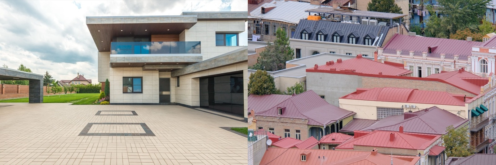

Flat Roof vs Pitched Roof
A usable concrete deck you can walk on, or a sloped roof that sheds tropical rain by gravity. Both are everywhere in Latin America — the choice is drainage, space, and style.

A flat roof (the concrete losa ubiquitous in Latin America) gives you a walkable deck and a modern line; a pitched roof sheds rain by gravity and hides its structure. Both are everywhere in the tropics, and both work — the decision comes down to drainage, usable space, and the look you want.
The quick verdict
Pitched roofs are the lower-risk choice for shedding torrential tropical rain — gravity does the work. Flat concrete roofs win when you want a roof terrace, a modern aesthetic, or a future second floor — but they live or die on waterproofing and drainage, which must be done right.The head-to-head
| Factor | Flat roof (concrete losa) | Pitched roof |
|---|---|---|
| Drainage | 🔴 Relies on membrane + drains + slope | 🟢 Sheds rain by gravity |
| Usable space | 🟢 Walkable deck / terrace / future floor | 🔴 Attic/void only |
| Cost | 🔴 Higher (structural slab + waterproofing) | 🟡 Varies by material |
| Leak risk | 🟡 Membrane must be maintained | 🟢 Lower — water runs off |
| Hurricane / wind | 🟢 Nothing to lift (slab) | 🟡 Depends on material & anchoring |
| Heat | 🟡 Mass holds heat; needs insulation/reflective coat | 🟡 Depends on material + attic venting |
| Look | 🟢 Modern, minimalist | 🟢 Classic / varied |
How they actually differ
It's a trade between space and safety. A pitched roof throws water off automatically and is the forgiving choice in a downpour, but the roof volume is dead space. A flat concrete roof hands you a whole usable surface — terrace, garden, future storey — and unbeatable storm resistance (there's nothing to blow off), but because it can't drain by gravity it depends entirely on a sound waterproof membrane, a built-in slope, and working drains. Neglect those and a flat roof leaks; maintain them and it lasts decades.
…in the tropics specifically
Both are proven in Panama and Costa Rica. The flat concrete losa is a regional favorite precisely because it's permanent, hurricane-proof, and doubles your living space with a rooftop terrace — as long as the waterproofing and drainage are done properly (this is where cheap flat roofs fail). Where you'd rather not manage a membrane, a pitched metal or tile roof sheds the region's heavy rain effortlessly. Many tropical homes even combine both.
Not sure which is right for your build?
SORA is a fixed-price design-build platform for foreign buyers in Panama and Costa Rica. We spec the material and method that actually fit your site, climate, and budget — and tell you straight when the cheaper option is the smarter one.
See real 2026 build costs →Frequently asked questions
Is a flat roof or pitched roof better for heavy rain?
A pitched roof is the more forgiving choice in heavy rain because gravity sheds the water automatically. A flat roof can handle tropical downpours too, but only with proper waterproofing, a built-in slope, and working drains — done poorly, flat roofs are more prone to ponding and leaks.
Why are flat concrete roofs so common in Latin America?
Because they're permanent, hurricane- and fire-proof, and give you a usable rooftop surface — a terrace, garden, or the base for a future second floor. The reinforced-concrete slab (losa) is the same material as the walls, so it's a natural, durable extension of the structure.
Do flat roofs leak more than pitched roofs?
They can, because they rely on a waterproof membrane and drainage rather than gravity. A well-built and maintained flat roof stays dry for decades, but it's less forgiving of poor workmanship than a pitched roof, which simply lets water run off.
Sources & verification
Figures in this guide were checked against primary and authoritative sources on 27 July 2026. Immigration, tax, and cost figures change — always confirm the current rules with the official body or a licensed professional before acting.
- Bob Vila — flat vs pitched roof
- Forbes Home — roof types & drainage